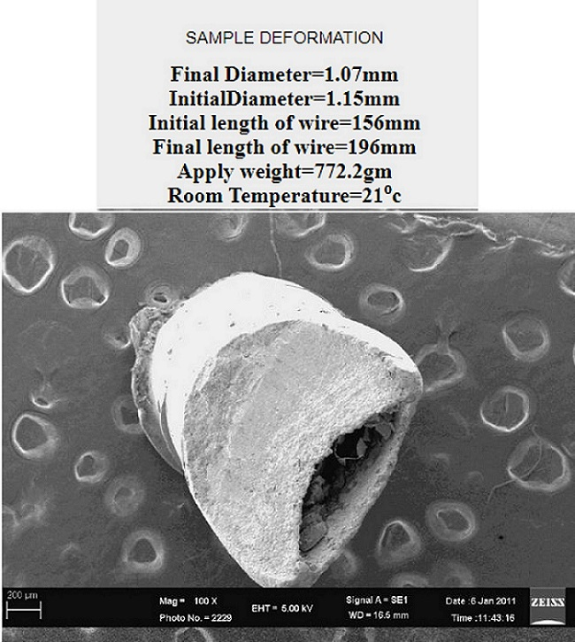

Please Select one of the following to view the behavior
Following are the creep transient results for some of the obstacle distances which have been tested:
0.60μm
0.88μm
1.10μm
Experimental result

Conclusion